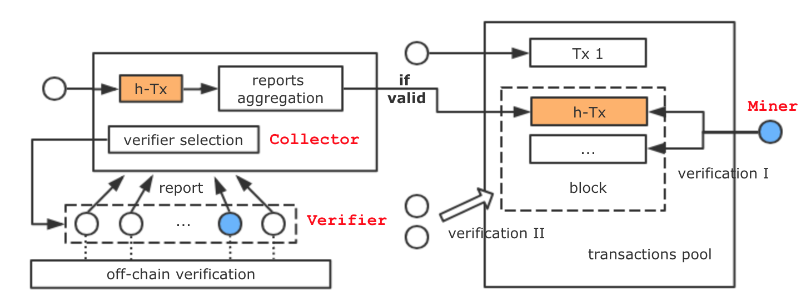

Computations once were executed where they were needed, now they can be offloaded to other clients with computing power. However, the correctness of such outsourced solution is far from guaranteed because most of those untrusted clients are self-interested and some of them are even byzantine. While building outsourced computing system based on blockchain can provide authenticity based on Nakamoto consensus through verification, users are susceptible to a resource exhaustion attack or an incorrect transaction attack as the verification cost increases (known as Verifier's Dilemma). In this work, we proposed an extra incentive mechanism based on peer prediction and online learning atop blockchains consensus protocol to both increase scalability and provide incentives.
Nakamoto consensus protocol in Bitcoin and Ethereum lacks of:
Facing these adversarial behaviors both from malicious and rational nodes, the objective of our mechanism is to achieve (1). Byzantine Nash Equilibrium: with the defined utility function for rational nodes, there is no benefit to unilaterally deviate from the protocol; (2) incentive-compatible: we achieve desired properties when rational nodes follow the protocol as specified; (3). byzantine consensus: guarantee Agreement, Termination and Validity with the bound on the fraction of malicious nodes.

Collector.select_verifier()Collector.aggregate_report()Collector.distribute_reward()